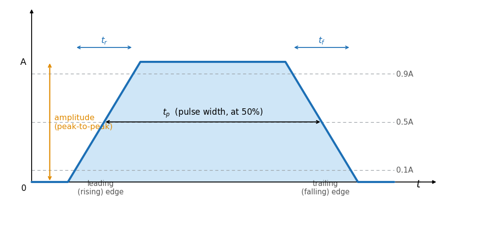
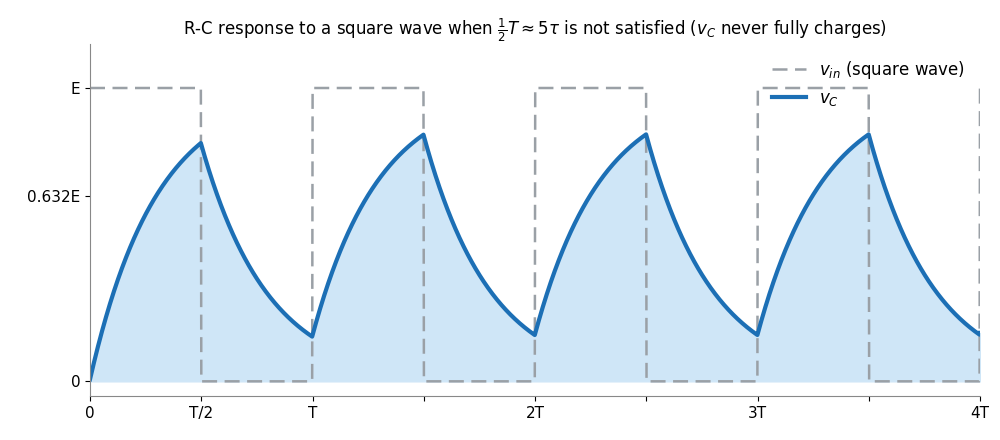

Pulse Waveforms & RC Response Lecture 8
Digital systems, communications, radar and computers all run on pulses. This page defines the vocabulary of a real pulse, shows how to measure its width, duty cycle and average value, and works out how an R-C network reshapes a square wave — the same exponential charging you met with capacitors, now applied over and over.
1 The Ideal vs the Actual Pulse
An ideal pulse jumps instantly between two levels. A real circuit can't do that: the reactive elements resist instantaneous change — a capacitor opposes a jump in voltage, an inductor a jump in current — so every edge acquires a slope.
Because of these slopes (plus rounding at the corners), a practical pulse is described by a handful of timing and amplitude parameters rather than two perfect vertical lines.
Reference: Boylestad, Introductory Circuit Analysis, Ch. 24 (Pulse Waveforms and the R-C Response).
2 Pulse Parameters: Amplitude, Width & Baseline

Amplitude. For most pulses the amplitude is taken as the peak-to-peak value. If the waveform starts and returns to 0 V, the peak and peak-to-peak values are the same.
Base-line voltage. The level from which the pulse is initiated. A positive-going pulse rises above the base line; a negative-going pulse drops below it.
- tp – pulse width / duration (s)
- defined at the 50 % level so the sloped edges don't make it ambiguous
Reference: Boylestad, Ch. 24.2.
3 Rise/Fall Time, Tilt & Distortions
Rise time (tr) and fall time (tf) measure how quickly the pulse changes level. Because the corners round off, they are defined between the 10 % and 90 % points of the amplitude (generally tr ≈ tf).
- tilt (also droop or sag) – the drop in the flat top, caused by poor low-frequency response
- V₁, V₂ – top level at the start and end of the pulse
Reference: Boylestad, Ch. 24.2.
4 Pulse Trains, Repetition Rate & Duty Cycle
A pulse train is a series of pulses; a periodic pulse train repeats every period T (the time between any two corresponding points). Two numbers summarise it:
- prf – pulse repetition frequency (or prr, repetition rate); depends only on T, not pulse shape
- duty cycle – the % of the period the pulse is "on"
Worked example — repetition rate & duty cycle (from the lecture)
A trigger waveform reads 2.6 div per period and a pulse of 0.2 div at 10 µs/div:
T = 2.6\times 10\,\mu s = 26\,\mu s \;\Rightarrow\; \text{prf} = \tfrac{1}{26\,\mu s} \approx 38\,\text{kHz}
t_p = 0.2\times 10\,\mu s = 2\,\mu s \;\Rightarrow\; \text{duty cycle} = \tfrac{2}{26}\times 100\% \approx 7.7\%
Reference: Boylestad, Ch. 24.3.
5 Average Value of a Pulse Waveform
The average can always be found from the definition (area ÷ length), but for a pulse there's a quick shortcut using the duty cycle in decimal form:
- first form is valid for any waveform; second is the pulse-specific shortcut
Worked example — average value
A pulse sits at 8 mV for 4 µs of a 10 µs period and at a 2 mV base line for the rest (duty cycle 0.4):
V_{av} = (0.4)(8\,\text{mV}) + (0.6)(2\,\text{mV}) = 3.2 + 1.2 = 4.4\,\text{mV}
Reference: Boylestad, Ch. 24.3.
6 The General R-C Transient Response
Every charging or discharging segment of an R-C circuit follows one master equation — it glides exponentially from its initial value to its final value:
- Vi – initial capacitor voltage (start of the segment)
- Vf – final/steady-state voltage the segment is heading toward
- τ = RC – time constant; the transient is essentially over after ≈ 5τ
- current is a pure decay; it is largest at the instant the level changes
Reference: Boylestad, Ch. 24.4.
7 R-C Response to a Square Wave
A square wave is just a pulse train with a 50 % duty cycle. Feed it to an R-C circuit and the capacitor voltage is set entirely by how the half-period ½T compares with the time constant:
| Case | What vC looks like |
|---|---|
| ½T ≫ 5τ (low frequency) | vC fully charges and discharges — it nearly copies the input square wave (with rounded edges). |
| ½T ≈ 5τ | vC just reaches its final value before reversing. |
| ½T ≪ 5τ (high frequency) | vC never finishes charging — the output looks almost triangular and is much smaller than the input. |

Worked example — 10 kHz square wave (from the lecture)
R = 5 kΩ, C = 10 nF, so τ = RC = 50 µs. A 10 kHz square wave has T = 100 µs, hence ½T = 50 µs = τ — the half-period equals one time constant, so vC reaches only 63.2 % before the input flips:
v_C(\tau) = 10\,\text{mV}\,(1 - e^{-1}) = 10\,\text{mV}\,(0.632) = 6.32\,\text{mV}
Steady state is reached within about five cycles; the current iC becomes symmetric so its average over a cycle is zero — exactly what a series capacitor (an open circuit to DC) demands.
Reference: Boylestad, Ch. 24.5–24.6.
8 Oscilloscope Probe Compensation
A ×10 attenuator probe deliberately divides the input by 10 so the scope loads the circuit less. With a 1 MΩ scope input, the probe adds 9 MΩ (not 10) so the divider gives:
- the 9 MΩ : 1 MΩ split makes the ÷10 attenuation
But the scope and cable also have capacitance. Left alone, that capacitance plus the 9 MΩ forms an R-C network that rounds off square waves. The fix is a small variable capacitor across the 9 MΩ resistor, giving a compensated probe. It is frequency-independent only when the two R-C products match:
- Rp, Cp – probe resistance & capacitance; Rs, Cs – scope side
Reference: Boylestad, Ch. 24.7.